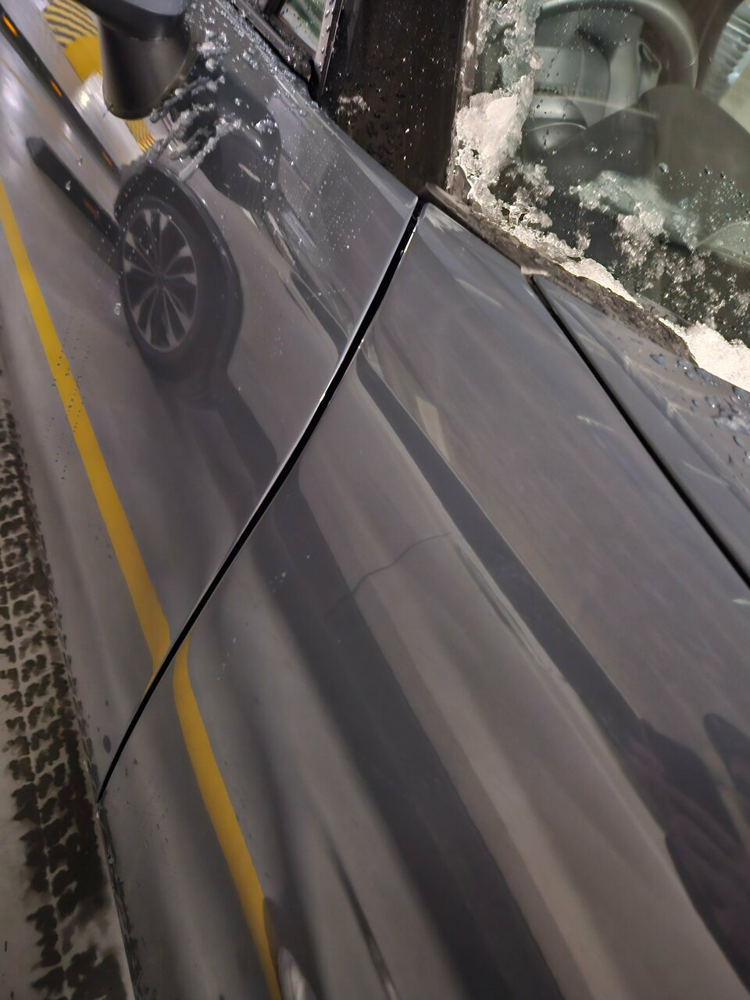
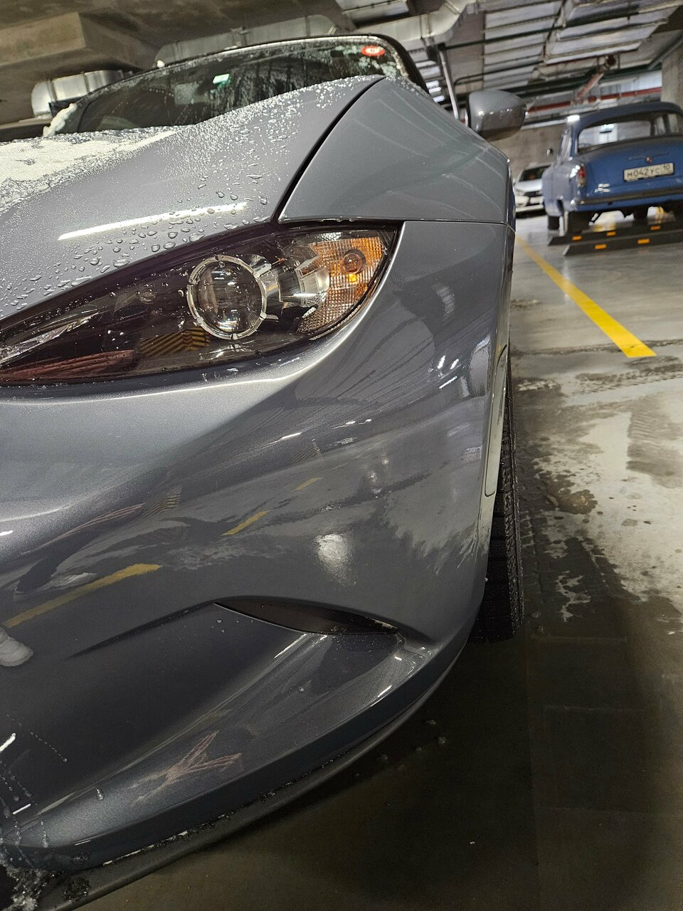
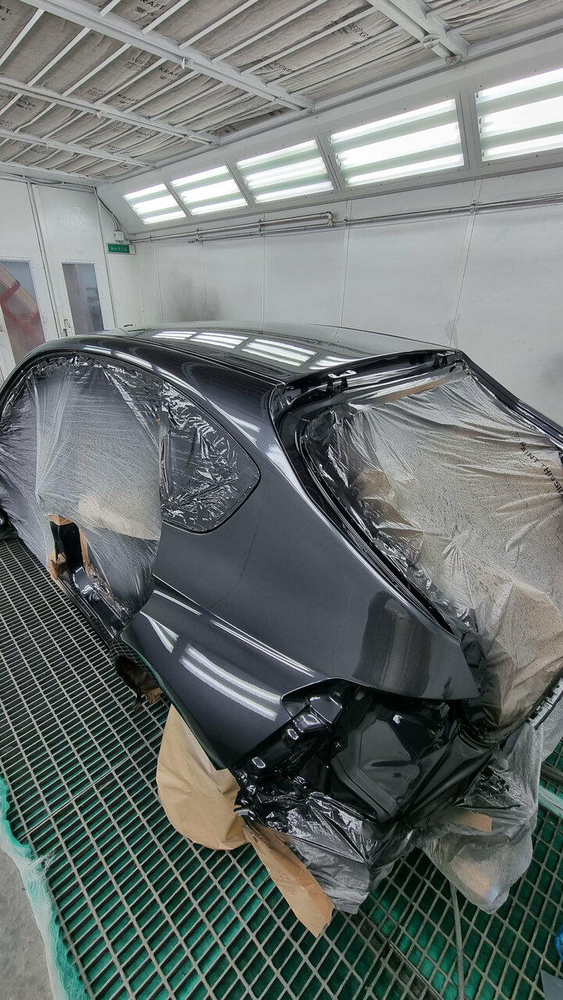
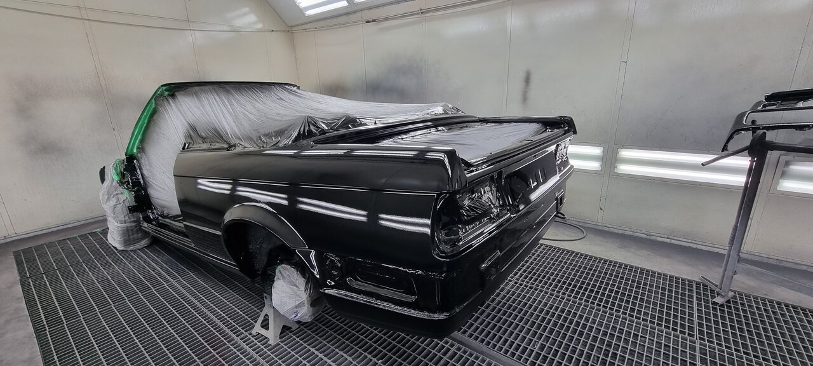

До и после
Ремонт проверяется
в деталях.
На фото — автомобили из публичной галереи Mill Reef на Яндекс Картах.


Кейс 01 / кузовной ремонт
Геометрия передней части
Восстановили форму элементов, выставили зазоры, подготовили поверхность и выполнили локальную окраску с подбором оттенка.
Результат оцениваем не только в камере — автомобиль проверяется при разном освещении.

Кейс 02 / окраска
Подготовка и окрас в камере
Изолируем зоны, выдерживаем технологию слоёв и контролируем поверхность под профессиональным светом.

Кейс 03 / реставрация
Полное восстановление кузова
Разборка, работа с металлом, подготовка каждого элемента, полный окрас и аккуратная сборка.